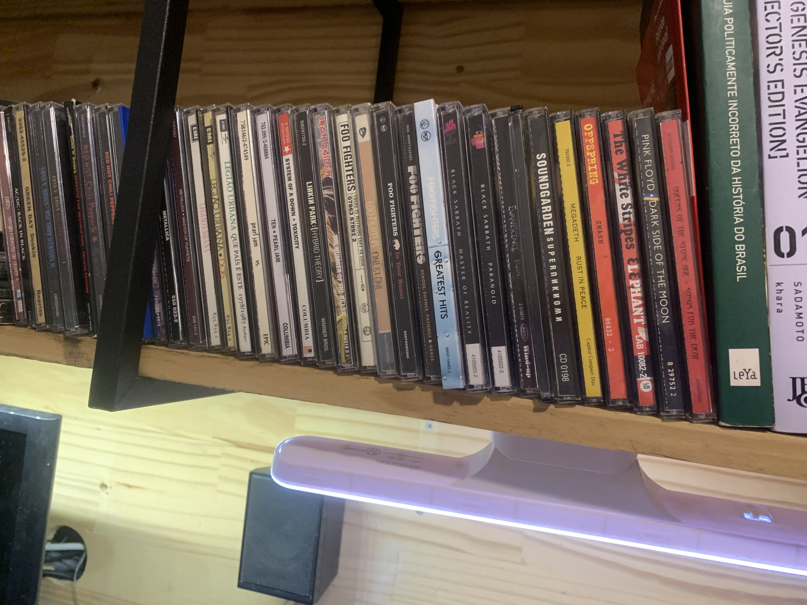

My CDs Collection!
Ano passado, meu interesse de música vem aumentando, e com isso meu conhecimento sobre eles também vem expandindo, em meados de novembro eu fui num show do RHCP (o qual foi a primeira vez que fui a um show na vida)
No ínicio do ano, eu começei o projeto de colecionar CDs de albums cujo são de artistas de meu interesse. Começou com RHCP, Guns N' Roses, Metallica. Eu faço rips desses cds e ponho na minha coleção local de ALACs e FLACs!
Coleção de 22/01/25.Minha posse atual de CDs está assim:
CDs cujo já tenho em minha coleção ;w;
- Silverchair - Frogstomp (1995)
- Queens of the Stone Age - Songs for the Deaf (2002)
- Pink Floyd - The Dark Side Of The Moon (1973)
- The White Stripes - Elephant (2003)
- Megadeth - Rust In Piece (1990)
- The Offspring- Smash (1994)
- Legião Urbana - Legião Urbana (1985), Dois (1986), Que Pais é Este (1987)
- Foo Fighters - The Colour And The Shape (1997), There Is Nothing Left To Lose (1999), One by One (2002), In Your Honor (2005), "Echoes, Silence, Patience & Grace" (2007), Greatest Hits (2009)
- Iron Maiden - The Number of The Beast (1982)
- Soundgarden - Superunknown (1994)
- Pearl Jam - Ten (1991), vs. (1993)
- Metallica - Metallica (1991), Master of Puppets (1986)
- Evanescense - Fallen (2002)
- Black Sabbath - Paranoid (1970), Master Of Reality (1971)
- Linkin Park - Hybrid Theory (2000)
- System Of a Down - Toxicity (2001)
- Nirvana - Nevermind (1991)
- Red Hot Chilli Peppers - Californication (1991), By the Way (2002), Stadium Arcadium (2006)
- Queen - A Night at the Opera (1975)
- Led Zeppelin - Led Zeppelin IV (1971)
- Guns N' Roses - Appetite for Destruction (1987), "Use Your Illusion I" & "Use Your Illusion II" (1991)
- Green Day - Dookie (1994)
- AC/DC - Back in Black (1980)
CDs que não tenho mas está na minha lista de desejos:
- Nirvana - In Utero (1993)
- Kyuss - Blues for the Red Sun (1992), Welcome to Sky Valley (1994), ...And the Circus leave Town (1995)
- Limp Bizkit - Significant Other (1999), Chocolate Starfish and the Hot Dog Flavored Water (2000)
- Lynyrd Skynyrd - (Pronounced 'Lĕh-'nérd 'Skin-'nérd) (1977)
- blink-182 - Enema Of The State (1999)
- Evanescence - The Open Door (2006)
- Red Hot Chilli Peppers - Blood Sugar Sex Magik (1991), Unlimited Love (2022)
- Radiohead - In Rainbows (2007), Ok Computer (1997)
- Foo Fighters - Foo Fighters (1995), Wasting Light (2011), But Here We Are (2023), Concrete and Gold (2017), Medicine at Midnight (2021)
- Probot (2004)
- Mamonas Assassinas (1995)
- Linkin Park - Meteora (2003)
- System Of A Down - System Of A Down (1998)
- Pitty - Admirável Chip Novo (2003), Anacrônico (2005)
- Pink Floyd - Wish You Were Here (1975)
- Led Zeppelin - Led Zeppelin (1969), Led Zeppelin II (1969), Houses of The Holy (1973)
- Lena Raine - Celeste (Original Soundtrack) (2018)
- Seu Jorge - Músicas Para Churrasco Vol. 1 (2011)
- Queens of the Stone Age - Queens of the Stone Age (1998), Rated R (2000), Era Vulgaris (2007), ...Like Clockwork (2013)